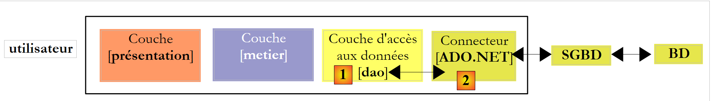
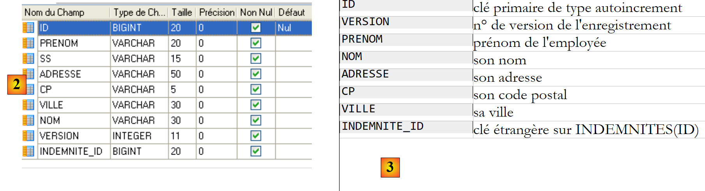
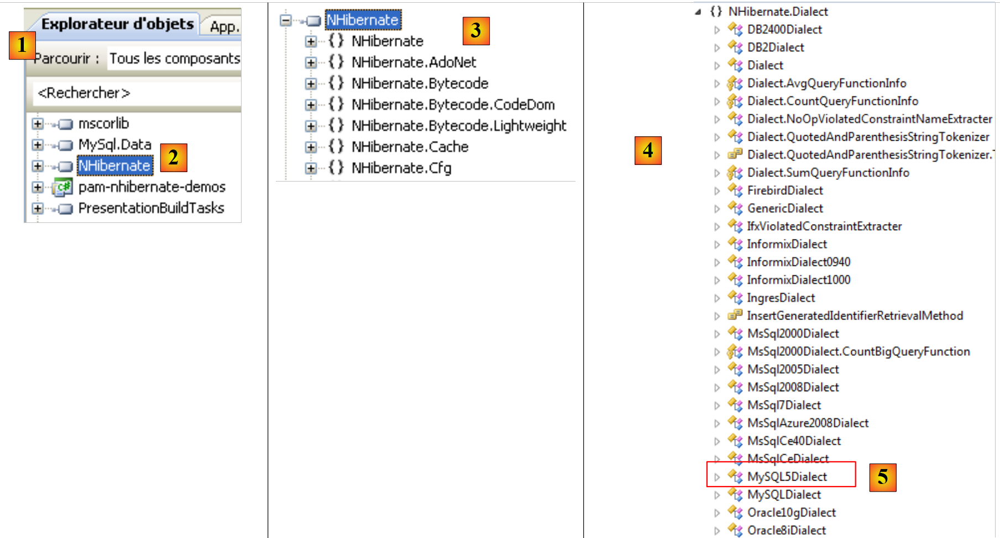
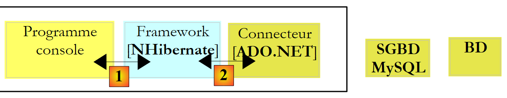

1. Inleiding tot de ORM NHibernate
De PDF van dit document is beschikbaar |HIER|.
De voorbeelden uit het document zijn beschikbaar |HIER|.
Dit document is een beknopte inleiding tot NHibernate, het equivalent voor .NET van het Java-framework Hibernate. Voor een uitgebreide inleiding kunt u het volgende lezen:
Titel: NHibernate in Action, Auteur: Pierre-Henri Kuaté, Uitgever: Manning, ISBN-13: 978-1932394924
Een ORM (Object Relational Mapper) is een verzameling bibliotheken waarmee een programma dat gebruikmaakt van een database deze kan benutten zonder expliciete SQL-opdrachten te geven en zonder de specifieke kenmerken van de gebruikte SGBD te kennen.
Vereisten
In een [beginner-gemiddeld-gevorderd]-structuur bevindt dit document zich in het [intermédiaire]-gedeelte. Om dit document te kunnen begrijpen, zijn diverse vereisten nodig die te vinden zijn in enkele documenten die ik heb geschreven:
- [Spring IoC], beschikbaar via de URL [Spring IoC voor .NET (2005)]. Hierin worden de basisprincipes van inversie van controle (Inversion of Control) of afhankelijkheidsinjectie (Dependency Injection) van het Spring.Net-framework [Spring.NET | Homepage ] toegelicht.
Aan het begin van sommige alinea’s in dit document worden soms leestips gegeven. Deze verwijzen naar eerdere documenten.
Hulpmiddelen
De tools die in deze casestudy worden gebruikt, zijn gratis beschikbaar op het internet. Het gaat om de volgende (december 2011):
- Nhibernate 3.2, beschikbaar via de URL [http://nhforge.org/Default.aspx]
- Spring.net 1.3.2 beschikbaar via de URL [http://www.springframework.net]. Het framework Spring.net is zeer uitgebreid. We zullen hier alleen de bibliotheek gebruiken die het meebrengt om het gebruik van het Nhibernate-framework te vergemakkelijken.
- Log4net 1.2.10 is beschikbaar via de URL [http://logging.apache.org/log4net]. Dit logboekframework wordt gebruikt door Nhibernate.
- Nunit 2.5 is beschikbaar via de URL [http://www.nunit.org/]. Dit framework voor unit-tests is voor .NET het equivalent van het framework JUnit voor het Java-platform.
- De driver ADO.NET 6.4.4 van SGBD MySQL 5 is beschikbaar via de URL [http://dev.mysql.com/downloads/connector/net]
Alle DLL-bestanden die nodig zijn voor Visual Studio 2010-projecten zijn verzameld in een map [libnet4]:
 |
1.1. De plaats van NHIBERNATE in een gelaagde .NET-architectuur
Een .NET-toepassing die gebruikmaakt van een database kan als volgt in lagen worden opgebouwd:
 |
De laag [dao] communiceert met de SGBD via de API ADO.NET. Laten we de belangrijkste methoden van deze API nog eens op een rijtje zetten.
In de verbonden modus doet de applicatie het volgende:
- een verbinding met de gegevensbron
- werkt met de gegevensbron (lezen/schrijven)
- sluit de verbinding af
Drie ADO.NET-interfaces zijn voornamelijk betrokken bij deze bewerkingen:
- IDbConnection, dat de eigenschappen en methoden van de verbinding omvat.
- IDbCommand, dat de eigenschappen en methoden van de uitgevoerde opdracht SQL omvat.
- IDataReader, dat de eigenschappen en methoden van het resultaat van een SQL Select-opdracht omvat.
De interface IDbConnection
wordt gebruikt om de verbinding met de database te beheren. Onder de methoden M en eigenschappen P van deze interface bevinden zich de volgende:
Naam | Type | Rol |
P | verbindingsstring naar de database. Deze bevat alle parameters die nodig zijn om verbinding te maken met een specifieke database. | |
M | opent de verbinding met de database die is gedefinieerd door ConnectionString | |
M | sluit de verbinding | |
M | start een transactie. | |
P | verbindingsstatus: ConnectionState.Closed, ConnectionState.Open, ConnectionState.Connecting, ConnectionState.Executing, ConnectionState.Fetching, ConnectionState.Broken |
Als Connection een klasse is die de interface IDbConnection implementeert, kan de verbinding als volgt tot stand worden gebracht:
De interface IDbCommand
Wordt gebruikt om een opdracht SQL of een opgeslagen procedure uit te voeren. Tot de methoden M en eigenschappen P van deze interface behoren onder andere de volgende:
Naam | Type | Rol |
P | geeft aan wat er moet worden uitgevoerd – haalt zijn waarden uit een opsomming: - CommandType.Text: voert de opdracht SQL uit die is gedefinieerd in de eigenschap CommandText. Dit is de standaardwaarde. - CommandType.StoredProcedure: voert een opgeslagen procedure in de database uit | |
P | - de tekst van de opdracht SQL die moet worden uitgevoerd als CommandType = CommandType.Text - de naam van de opgeslagen procedure die moet worden uitgevoerd als CommandType = CommandType.StoredProcedure | |
P | de verbinding IDbConnection die moet worden gebruikt om de opdracht SQL uit te voeren | |
P | de transactie IDbTransaction waarin de opdracht SQL moet worden uitgevoerd | |
P | de lijst met parameters van een geconfigureerde opdracht SQL. De opdracht update articles set price=price*1.1 where id=@id heeft de parameter @id. | |
M | om een opdracht SQL Select uit te voeren. We krijgen een object IDataReader dat het resultaat van Select weergeeft. | |
M | om een opdracht SQL Update, Insert, Delete uit te voeren. Hiermee wordt het aantal rijen weergegeven dat door de bewerking is beïnvloed (bijgewerkt, ingevoegd, verwijderd). | |
M | om een opdracht SQL uit te voeren. Select levert slechts één resultaat op, zoals in: select count(*) from articles. | |
M | om de parameters IDbParameter aan te maken voor een geconfigureerde opdracht SQL. | |
M | maakt het mogelijk de uitvoering van een geparametriseerde query te optimaliseren wanneer deze meerdere keren met verschillende parameters wordt uitgevoerd. |
Als Command een klasse is die de interface IDbCommand implementeert, ziet de uitvoering van een opdracht SQL zonder transactie er als volgt uit:
De interface IDataReader
wordt gebruikt om de resultaten van een opdracht SQL Select in te kapselen. Een object IDataReader vertegenwoordigt een tabel met rijen en kolommen, die achtereenvolgens worden verwerkt: eerst de eerste rij, dan de tweede, ... Onder de methoden M en eigenschappen P van deze interface bevinden zich de volgende:
Naam | Type | Rol |
P | het aantal kolommen in de tabel IDataReader | |
M | GetName(i) geeft de naam weer van kolom nr. i van de tabel IDataReader. | |
P | Item[i] vertegenwoordigt kolom nr. i van de huidige rij in de tabel IDataReader. | |
M | gaat naar de volgende regel van de tabel IDataReader. Geeft de booleaanse waarde True terug als het lezen is gelukt, False anders. | |
M | sluit de tabel IDataReader. | |
M | GetBoolean(i): geeft de booleaanse waarde weer van kolom nr. i van de huidige rij in de tabel IDataReader. De andere, vergelijkbare methoden zijn: GetDateTime, GetDecimal, GetDouble, GetFloat, GetInt16, GetInt32, GetInt64, GetString. | |
M | Getvalue(i): geeft de waarde van kolom nr. i van de huidige rij van de tabel IDataReader weer als type object. | |
M | IsDBNull(i) levert True op als kolom nr. i van de huidige rij in de tabel IDataReader geen waarde heeft, wat wordt aangeduid met de waarde SQL NULL. |
De verwerking van een object IDataReader ziet er vaak als volgt uit:
In de vorige architectuur,
 is |
is de connector [ADO.NET] gekoppeld aan SGBD. De klasse die de interface [IDbConnection] implementeert, is dus:
- de klasse [MySQLConnection] voor de SGBD MySQL
- de klasse [SQLConnection] voor de SGBD en SQLServer
De laag [dao] is dus afhankelijk van de gebruikte SGBD. Bepaalde frameworks (Linq, Ibatis.net, NHibernate) heffen deze beperking op door een extra laag toe te voegen tussen de [dao]-laag en de [ADO.NET]-connector van het gebruikte SGBD. We zullen hier het framework [NHibernate] gebruiken.
 |
Hierboven richt de laag [dao] zich niet langer tot de connector [ADO.NET], maar tot het framework NHibernate, dat een interface zal aanbieden die onafhankelijk is van de gebruikte connector [ADO.NET]. Dankzij deze architectuur kan de SGBD worden vervangen zonder de laag [dao] te wijzigen. Alleen de connector [ADO.NET] hoeft dan te worden vervangen.
1.2. De voorbeelddatabase
Om te laten zien hoe je met NHibernate werkt, gebruiken we de volgende MySQL [dbpam_nhibernate]-database:
 |
- In [1] bestaat de database uit drie tabellen:
- [employes]: een tabel waarin de medewerksters van een kinderdagverblijf worden geregistreerd
- [cotisations]: een tabel waarin de sociale premiepercentages worden vastgelegd
- [indemnites]: een tabel waarin gegevens worden opgeslagen waarmee het loon van de medewerksters kan worden berekend
Tabel [employes]
 |
- in [2], de tabel met werknemers en in [3], de betekenis van de velden
De inhoud van de tabel zou als volgt kunnen zijn:
Tabel [cotisations]
 |
- in [4], de tabel met premies en in [5], de betekenis van de velden
De inhoud van de tabel zou als volgt kunnen zijn:
Tabel [indemnites]
 |
- in [6], de tabel met vergoedingen en in [7], de betekenis van de velden
De inhoud van de tabel zou als volgt kunnen zijn:
Het exporteren van de databasestructuur naar een bestand SQL levert het volgende resultaat op:
Merk op dat in de rijen 6, 20 en 36 de primaire sleutels ID het attribuut autoincrement hebben. Dit betekent dat MySQL automatisch de waarden van de primaire sleutels genereert telkens wanneer er een record wordt toegevoegd. De ontwikkelaar hoeft zich hier geen zorgen over te maken.
1.3. Het C#-demoproject
Om de configuratie en het gebruik van NHibernate te illustreren, gebruiken we de volgende architectuur:
 |
Een consoleprogramma [1] verwerkt de gegevens uit de voorgaande database [2] via het framework [NHibernate] [3]. Dit brengt ons bij de volgende onderwerpen:
- de configuratiebestanden van NHibernate
- API van NHibernate
Het C#-project ziet er als volgt uit:
 |
De benodigde elementen voor het project zijn:
- in [1], de DLL-bestanden die het project nodig heeft:
- [NHibernate]: de DLL van het framework NHibernate
- [MySql.Data]: de DLL van de connector ADO.NET van de SGBD MySQL
- [log4net]: de DLL van het Log4net-framework waarmee logbestanden kunnen worden gegenereerd
- in [2], de beeldklassen van de databasetabellen
- in [3], het bestand [App.config] dat de gehele applicatie configureert, waaronder het framework [NHibernate]
- in [4], testconsole-applicaties
1.3.1. Configuratie van de verbinding met de database
Laten we teruggaan naar de testarchitectuur:
 |
Hierboven moet [NHibernate] toegang hebben tot de database. Hiervoor heeft het bepaalde informatie nodig:
- de SGBD die de database beheert (MySQL, SQLServer, Postgres, Oracle, ...). De meeste SGBD hebben aan de taal SQL eigen uitbreidingen toegevoegd. Als NHibernate de SGBD kent, kan het de SQL-opdrachten die het naar deze SGBD verstuurt, aanpassen. NHibernate maakt gebruik van het begrip dialect SQL.
- de verbindingsparameters voor de database (naam van de database, gebruikersnaam van de eigenaar van de verbinding, zijn wachtwoord)
Deze gegevens kunnen in het configuratiebestand [App.config] worden opgenomen. Hieronder volgt het bestand dat zal worden gebruikt met een database MySQL 5:
<?xml version="1.0" encoding="utf-8" ?>
<configuration>
<!-- configuratiesecties -->
<configSections>
<section name="log4net" type="log4net.Config.Log4NetConfigurationSectionHandler,log4net" />
<section name="hibernate-configuration" type="NHibernate.Cfg.ConfigurationSectionHandler, NHibernate" />
</configSections>
<!-- configuratie NHibernate -->
<hibernate-configuration xmlns="urn:nhibernate-configuration-2.2">
<session-factory>
<property name="connection.provider">NHibernate.Connection.DriverConnectionProvider</property>
<!--
<property name="connection.driver_class">NHibernate.Driver.MySqlDataDriver</property>
-->
<property name="dialect">NHibernate.Dialect.MySQL5Dialect</property>
<property name="connection.connection_string">
Server=localhost;Database=dbpam_nhibernate;Uid=root;Pwd=;
</property>
<property name="show_sql">false</property>
<mapping assembly="pam-nhibernate-demos"/>
</session-factory>
</hibernate-configuration>
<!-- Deze sectie bevat de log4net-configuratie-instellingen -->
<!-- NOTE IMPORTANTE: de logbestanden zijn standaard niet actief. Ze moeten programmatisch worden geactiveerd met de instructie log4net.Config.XmlConfigurator.Configure();
! -->
<log4net>
<!-- Definieer een uitvoerappender (waar de logbestanden naartoe kunnen worden gestuurd) -->
<appender name="LogFileAppender" type="log4net.Appender.FileAppender, log4net">
<param name="File" value="log.txt" />
<param name="AppendToFile" value="false" />
<layout type="log4net.Layout.PatternLayout, log4net">
<param name="ConversionPattern" value="%d [%t] %-5p %c [%x] <%X{auth}> - %m%n" />
</layout>
</appender>
<appender name="LogDebugAppender" type="log4net.Appender.DebugAppender, log4net">
<layout type="log4net.Layout.PatternLayout, log4net">
<param name="ConversionPattern" value="%d [%t] %-5p %c [%x] <%X{auth}> - %m%n"/>
</layout>
</appender>
<appender name="ConsoleAppender" type="log4net.Appender.ConsoleAppender, log4net">
<layout type="log4net.Layout.PatternLayout, log4net">
<param name="ConversionPattern" value="%d [%t] %-5p %c [%x] <%X{auth}> - %m%n"/>
</layout>
</appender>
<!-- Stel de hoofdcategorie in, stel het standaardprioriteitsniveau in en voeg de appender(s) toe (waar de logbestanden naartoe gaan) -->
<root>
<priority value="INFO" />
<!--
<appender-ref ref="LogFileAppender" />
<appender-ref ref="LogDebugAppender"/>
-->
<appender-ref ref="ConsoleAppender"/>
</root>
<!-- Geef het niveau op voor bepaalde naamruimten -->
<!-- Het niveau kan zijn: ALL, DEBUG, INFO, WARN, ERROR, FATAL, OFF -->
<logger name="NHibernate">
<level value="INFO" />
</logger>
</log4net>
</configuration>
- regels 4-7: definiëren configuratiesecties in het bestand [App.config]. Laten we regel 6 eens bekijken:
<section name="hibernate-configuration" type="NHibernate.Cfg.ConfigurationSectionHandler, NHibernate" />
Deze regel definieert de configuratiesectie van NHibernate in het bestand [App.config]. Deze heeft twee attributen: name en type.
- Het attribuut [name] geeft de naam van de configuratiesectie aan. Deze sectie moet hier worden afgebakend door de tags <name>...</name>, in dit geval <hibernate-configuration>...</hibernate-configuration> op de regels 11-24.
- Het attribuut [type=classe,DLL] geeft de naam aan van de klasse die verantwoordelijk is voor de verwerking van de sectie die wordt gedefinieerd door het attribuut [name], evenals de DLL die deze klasse bevat. Hier heet de klasse [NHibernate.Cfg.ConfigurationSectionHandler] en bevindt deze zich in de DLL [NHibernate.dll]. We herinneren ons dat deze DLL deel uitmaakt van de referenties van het onderzochte project.
Laten we nu eens kijken naar de configuratiesectie van NHibernate:
<!-- configuratie NHibernate -->
<hibernate-configuration xmlns="urn:nhibernate-configuration-2.2">
<session-factory>
<property name="connection.provider">NHibernate.Connection.DriverConnectionProvider</property>
<!--
<property name="connection.driver_class">NHibernate.Driver.MySqlDataDriver</property>
-->
<property name="dialect">NHibernate.Dialect.MySQL5Dialect</property>
<property name="connection.connection_string">
Server=localhost;Database=dbpam_nhibernate;Uid=root;Pwd=;
</property>
<property name="show_sql">false</property>
<mapping assembly="pam-nhibernate-demos"/>
</session-factory>
</hibernate-configuration>
- regel 2: de configuratie van NHibernate staat binnen een <hibernate-configuration>-tag. Het xmlns-attribuut (Xml NameSpace) bepaalt de versie die wordt gebruikt om NHibernate te configureren. In de loop van de tijd is de manier waarop NHibernate wordt geconfigureerd namelijk veranderd. Hier wordt versie 2.2 gebruikt.
- regel 3: de configuratie van NHibernate is hier volledig opgenomen in de tag <session-factory> (regels 3 en 14). Een NHibernate-sessie is het hulpmiddel dat wordt gebruikt om met een database te werken volgens het schema:
- sessie openen
- werken met de database via de methoden van API NHibernate
- sessie sluiten
De sessie wordt aangemaakt door een factory, een algemene term voor een klasse die objecten kan aanmaken. De regels 3-14 configureren deze factory.
- regels 4, 6, 8, 9: configureren de verbinding met de doeldatabase. De belangrijkste gegevens zijn de naam van de gebruikte SGBD, de naam van de database, de gebruikersnaam en het wachtwoord.
- regel 4: definieert de verbindingprovider, degene bij wie een verbinding met de database wordt aangevraagd. De waarde van de eigenschap [connection.provider] is de naam van een klasse NHibernate. Deze eigenschap is niet afhankelijk van de gebruikte SGBD.
- regel 6: de te gebruiken driver ADO.NET. Dit is de naam van een klasse NHibernate die is gespecialiseerd voor een bepaalde SGBD, in dit geval MySQL. Regel 6 is uitgecommentarieerd, omdat deze niet essentieel is.
- regel 8: de eigenschap [dialect] bepaalt het dialect SQL dat bij de SGBD moet worden gebruikt. Hier is dat het dialect van SGBD MySQL.
Als we overschakelen naar SGBD, hoe vinden we dan het dialect NHibernate van dit bestand? Laten we teruggaan naar het vorige C#-project en dubbelklikken op de DLL [NHibernate] in het tabblad [References]:
 |
- in [1] toont het tabblad [Explorateur d'objets] een aantal DLL-bestanden, waaronder die waarnaar het project verwijst.
- in [2], de DLL [NHibernate]
- in [3], de DLL en de [NHibernate] die is ontwikkeld. Daarin zijn de verschillende naamruimten (namespace) te vinden die daarin zijn gedefinieerd.
- in [4], de naamruimte [NHibernate.Dialect] waarin de klassen staan die de verschillende bruikbare dialecten SQL definiëren.
- in [5], de klasse van het dialect van SGBD MySQL 5.
 |
- in [6], de naamruimte van de klasse [MySqlDataDriver] die hieronder op regel 6 wordt gebruikt:
<!-- configuratie NHibernate -->
<hibernate-configuration xmlns="urn:nhibernate-configuration-2.2">
<session-factory>
<property name="connection.provider">NHibernate.Connection.DriverConnectionProvider</property>
<!--
<property name="connection.driver_class">NHibernate.Driver.MySqlDataDriver</property>
-->
<property name="dialect">NHibernate.Dialect.MySQLDialect</property>
<property name="connection.connection_string">
Server=localhost;Database=dbpam_nhibernate;Uid=root;Pwd=;
</property>
<property name="show_sql">false</property>
<mapping assembly="pam-nhibernate-demos"/>
</session-factory>
</hibernate-configuration>
- regels 9-11: de verbindingsstring voor de database. Deze string heeft de vorm "param1=val1;param2=val2; ...". Met alle op deze manier gedefinieerde parameters kan de driver van SGBD een verbinding tot stand brengen. De vorm van deze verbindingsstring is afhankelijk van de gebruikte SGBD. De verbindingsstrings voor de belangrijkste SGBD zijn te vinden op de website [http://www.connectionstrings.com/]. Hier is de tekenreeks "Server=localhost;Database=dbpam_nhibernate;Uid=root;Pwd=;" een verbindingsreeks voor de SGBD MySQL. Deze geeft aan dat:
- Server=localhost;: de SGBD zich op dezelfde machine bevindt als de client die de verbinding wil openen
- Database=dbpam_nhibernate; : de beoogde MySQL-database
- Uid=root;: de gebruiker die de verbinding opent, is de root-gebruiker
- Pwd=;: deze gebruiker heeft geen wachtwoord (specifiek geval in dit voorbeeld)
- regel 12: de eigenschap [show_sql] geeft aan of NHibernate in zijn logbestanden de commando’s SQL moet weergeven die hij naar de database verstuurt. Tijdens de ontwikkelingsfase is het handig om deze eigenschap in te stellen op [true], zodat je precies weet wat NHibernate doet.
- regel 13: om de tag <mapping> te begrijpen, gaan we terug naar de architectuur van de applicatie:
 |
Als het consoleprogramma een directe client van de connector ADO.NET was en de lijst met medewerkers wilde opvragen, zou het de connector de opdracht SQL Select laten uitvoeren, en zou het in ruil daarvoor een object van het type IDataReader ontvangen, dat het zou moeten verwerken om de aanvankelijk gewenste lijst met medewerkers te verkrijgen.
Hierboven is het consoleprogramma de client van NHibernate en is NHibernate de client van de connector ADO.NET. We zullen later zien dat API van NHibernate het consoleprogramma in staat stelt om de lijst met medewerkers op te vragen. NHibernate zet dit verzoek om in een opdracht SQL Select, die het laat uitvoeren door de connector ADO.NET. Deze connector retourneert een object van het type IDataReader. Op basis van dit object moet NHibernate in staat zijn om de gevraagde lijst met medewerkers samen te stellen. Dit wordt mogelijk gemaakt door middel van configuratie. Aan elke tabel in de database is een C#-klasse gekoppeld. Zo kan NHibernate op basis van de rijen uit de tabel [employes] die door IDataReader worden geretourneerd, een lijst samenstellen van objecten die medewerkers vertegenwoordigen en deze aan het consoleprogramma teruggeven. Deze relaties tussen tabellen en klassen worden in configuratiebestanden aangemaakt. NHibernate gebruikt de term "mapping" om deze relaties te definiëren.
Laten we teruggaan naar regel 13 hieronder:
<!-- configuratie NHibernate -->
<hibernate-configuration xmlns="urn:nhibernate-configuration-2.2">
<session-factory>
<property name="connection.provider">NHibernate.Connection.DriverConnectionProvider</property>
<!--
<property name="connection.driver_class">NHibernate.Driver.MySqlDataDriver</property>
-->
<property name="dialect">NHibernate.Dialect.MySQL5Dialect</property>
<property name="connection.connection_string">
Server=localhost;Database=dbpam_nhibernate;Uid=root;Pwd=;
</property>
<property name="show_sql">false</property>
<mapping assembly="pam-nhibernate-demos"/>
</session-factory>
</hibernate-configuration>
Regel 13 geeft aan dat de configuratiebestanden voor de relaties tussen tabellen en klassen te vinden zijn in de assembly [pam-nhibernate-demos]. Een assembly is het uitvoerbare bestand of de DLL die wordt geproduceerd door het compileren van een project. Hier worden de mappingbestanden in de assembly van het voorbeeldproject geplaatst. Om de naam van deze assembly te achterhalen, moet u de eigenschappen van het project bekijken:
 |
- in [1], de projecteigenschappen
- op het tabblad [Application] [2], de naam van de assembly [3] die zal worden gegenereerd.
- Omdat het uitvoertype [Application console] [4] is, krijgt het bestand dat bij het compileren van het project wordt gegenereerd de naam [pam-nhibernate-demos.exe]. Als het uitvoertype [Bibliothèque de classes] [5] was, zou het bestand dat bij het compileren van het project wordt gegenereerd, de naam [pam-nhibernate-demos.dll] krijgen
- De assembly wordt gegenereerd in de map [bin/Release] van het project [6].
Uit de voorgaande uitleg blijkt dat de bestanden met de mappingtabellen <--> klassen in het bestand [pam-nhibernate-demos.exe] [6] moeten staan.
1.3.2. Configuratie van de mapping s <--> klassen
Laten we terugkeren naar de architectuur van het onderzochte project:
 |
- in [1] maakt het consoleprogramma gebruik van de methoden van API uit het framework NHibernate. Deze twee blokken wisselen objecten uit.
- In [2] maakt NHibernate gebruik van de API van een connector .NET. Het verzendt opdrachten van SQL naar het doelobject SGBD.
Het consoleprogramma zal objecten bewerken die de tabellen van de database weerspiegelen. In dit project zijn deze objecten en de koppelingen die ze met de tabellen van de database verbinden, in de onderstaande map [Entites] geplaatst:
 |
- elke tabel in de database komt overeen met een klasse en een mappingbestand tussen beide
Tabel | Klasse | Toewijzing |
bijdragen | Cotisations.cs | Cotisations.hbm.xml |
werknemers | Employe.cs | Employe.hbm.xml |
vergoedingen | Indemnites.cs | Indemnites.hbm.xml |
1.3.2.1. Toewijzing van tabel [cotisations]
Laten we de tabel [cotisations] eens bekijken:
 |
|
Een regel uit deze tabel kan worden ingekapseld in een object van het type [Cotisations.cs] als volgt:
namespace PamNHibernateDemos {
public class Cotisations {
// automatische eigenschappen
public virtual int Id { get; set; }
public virtual int Version { get; set; }
public virtual double CsgRds { get; set; }
public virtual double Csgd { get; set; }
public virtual double Secu { get; set; }
public virtual double Retraite { get; set; }
// fabrikanten
public Cotisations() {
}
// ToString
public override string ToString() {
return string.Format("[{0}|{1}|{2}|{3}]", CsgRds, Csgd, Secu, Retraite);
}
}
}
Voor elke kolom van de tabel [cotisations] is een automatische eigenschap aangemaakt. Elk van deze eigenschappen moet als virtueel worden gedeclareerd (virtual), omdat NHibernate de klasse zal afleiden en de eigenschappen ervan zal overschrijven (override). Deze moeten dus virtueel zijn.
Merk op, in regel 1, dat de klasse behoort tot de naamruimte [PamNHibernateDemos].
Het mappingbestand [Cotisations.hbm.xml] tussen de tabel [cotisations] en de klasse [Cotisations] is als volgt:
<?xml version="1.0" encoding="utf-8" ?>
<hibernate-mapping xmlns="urn:nhibernate-mapping-2.2"
namespace="PamNHibernateDemos" assembly="pam-nhibernate-demos">
<class name="Cotisations" table="COTISATIONS">
<id name="Id" column="ID" unsaved-value="0">
<generator class="native" />
</id>
<version name="Version" column="VERSION"/>
<property name="CsgRds" column="CSGRDS"/>
<property name="Csgd" column="CSGD"/>
<property name="Retraite" column="RETRAITE"/>
<property name="Secu" column="SECU"/>
</class>
</hibernate-mapping>
- het mappingbestand is een XML-bestand dat is gedefinieerd binnen de tag <hibernate-mapping> (regels 2 en 14)
- regel 4: de tag <class> legt de koppeling tussen een databasetabel en een klasse. Hier gaat het om de tabel [COTISATIONS] (attribuut table) en de klasse [Cotisations] (attribuut name). In .NET moet een klasse worden gedefinieerd aan de hand van de volledige naam (inclusief naamruimte) en de assembly waarin deze zich bevindt. Deze twee gegevens worden in regel 3 vermeld. De eerste (naamruimte) is te vinden in de definitie van de klasse. De tweede (assembly) is de naam van de assembly van het project. We hebben al aangegeven hoe je deze naam kunt vinden.
- regels 5-7: de tag <id> wordt gebruikt om de mapping van de primaire sleutel van de tabel [cotisations] te definiëren.
- regel 5: het attribuut name verwijst naar het veld van de klasse [Cotisations] dat de primaire sleutel van de tabel [cotisations] zal bevatten. Het attribuut column verwijst naar de kolom in de tabel [cotisations] die als primaire sleutel fungeert. Het attribuut unsaved-value dient om een nog niet gegenereerde primaire sleutel te definiëren. Aan de hand van deze waarde weet NHibernate hoe een object [Cotisations] in de tabel [cotisations] moet worden opgeslagen. Als dit object een veld Id=0 heeft, voert het een bewerking SQL INSERT uit; anders voert het een bewerking SQL UPDATE uit. De waarde van unsaved-value hangt af van het type van het veld Id van de klasse [Cotisations]. Hier is het van het type int en de standaardwaarde voor een type int is 0. Een nog niet opgeslagen object van het type [Cotisations] (dus zonder primaire sleutel) zal daarom het veld Id=0 hebben. Als het veld Id van het type Object of een afgeleid type was geweest, zouden we unsaved-value=null. hebben geschreven
- regel 6: wanneer NHibernate een object [Cotisations] met een veld Id=0 moet opslaan, moet het in de database een bewerking INSERT uitvoeren, waarbij het een waarde voor de primaire sleutel van het record moet verkrijgen. De meeste SGBD-objecten beschikken over een eigen methode om deze waarde automatisch te genereren. De tag <generator> wordt gebruikt om het mechanisme te definiëren dat moet worden gebruikt voor het genereren van de primaire sleutel. De tag <generator class="native"> geeft aan dat het standaardmechanisme van het gebruikte SGBD-object moet worden gebruikt. In paragraaf 1.2 hebben we gezien dat de primaire sleutels van onze drie MySQL-tabellen het attribuut autoincrement hadden. Tijdens zijn bewerkingen zal INSERT geen waarde leveren aan de kolom ID van het toegevoegde record, waardoor MySQL deze waarde genereert.
- regel 8: de tag <version> wordt gebruikt om de kolom in de tabel (en het bijbehorende veld in de klasse) te definiëren waarmee de records van een „versie“ kunnen worden voorzien. In eerste instantie is de versie 1. Deze wordt bij elke bewerking UPDATE met 1 verhoogd. Daarnaast wordt elke bewerking met UPDATE of DELETE uitgevoerd met een filter WHERE ID= id AND VERSION=v1. Een gebruiker kan een object dus alleen wijzigen of verwijderen als hij over de juiste versie ervan beschikt. Als dat niet het geval is, wordt er een uitzondering gegenereerd door NHibernate.
- regel 9: de tag <property> wordt gebruikt om een normale kolomtoewijzing te definiëren (geen primaire sleutel, geen versiekolom). Regel 9 geeft dus aan dat de kolom CSGRDS van de tabel [COTISATIONS] is gekoppeld aan de eigenschap CsgRds van de klasse [Cotisations].
1.3.2.2. Toewijzing van de tabel [indemnites]
Laten we eens kijken naar de tabel [indemnites]:
 |
|
Een regel uit deze tabel kan worden ingekapseld in een object van het type [Indemnites] als volgt:
namespace PamNHibernateDemos {
public class Indemnites {
// automatische eigenschappen
public virtual int Id { get; set; }
public virtual int Version { get; set; }
public virtual int Indice { get; set; }
public virtual double BaseHeure { get; set; }
public virtual double EntretienJour { get; set; }
public virtual double RepasJour { get; set; }
public virtual double IndemnitesCp { get; set; }
// constructors
public Indemnites() {
}
// identiteit
public override string ToString() {
return string.Format("[{0}|{1}|{2}|{3}|{4}]", Indice, BaseHeure, EntretienJour, RepasJour, IndemnitesCp);
}
}
}
Het mappingbestand voor de tabel [indemnites] <--> klasse [Indemnites] zou er als volgt uit kunnen zien (Indemnites.hbm.xml):
<?xml version="1.0" encoding="utf-8" ?>
<hibernate-mapping xmlns="urn:nhibernate-mapping-2.2"
namespace="PamNHibernateDemos" assembly="pam-nhibernate-demos">
<class name="Indemnites" table="INDEMNITES">
<id name="Id" column="ID" unsaved-value="0">
<generator class="native" />
</id>
<version name="Version" column="VERSION"/>
<property name="Indice" column="INDICE" unique="true"/>
<property name="BaseHeure" column="BASE_HEURE" />
<property name="EntretienJour" column="ENTRETIEN_JOUR" />
<property name="RepasJour" column="REPAS_JOUR" />
<property name="IndemnitesCp" column="INDEMNITES_CP" />
</class>
</hibernate-mapping>
Hier is niets nieuws te vinden ten opzichte van het eerder uitgelegde mappingbestand. Het enige verschil bevindt zich in regel 9. Het attribuut unique="true" geeft aan dat er in de tabel [indemnites] een uniekheidsbeperking geldt voor de kolom [INDICE]: er mogen geen twee rijen zijn met dezelfde waarde voor de kolom [INDICE].
1.3.2.3. Toewijzing van de tabel [employes]
Laten we eens kijken naar de tabel [employes]:
 |
|
Het nieuwe ten opzichte van de vorige tabellen is de aanwezigheid van een externe sleutel: de kolom [INDEMNITE_ID] is een externe sleutel op de kolom [ID] van de tabel [INDEMNITES]. Dit veld verwijst naar de rij in de tabel [INDEMNITES] die moet worden gebruikt voor de berekening van de vergoedingen van de werknemer.
De klasse [Employe] -weergave van de tabel [employes] zou er als volgt uit kunnen zien:
namespace PamNHibernateDemos {
public class Employe {
// automatische eigenschappen
public virtual int Id { get; set; }
public virtual int Version { get; set; }
public virtual string SS { get; set; }
public virtual string Nom { get; set; }
public virtual string Prenom { get; set; }
public virtual string Adresse { get; set; }
public virtual string Ville { get; set; }
public virtual string CodePostal { get; set; }
public virtual Indemnites Indemnites { get; set; }
// constructoren
public Employe() {
}
// ToString
public override string ToString() {
return string.Format("[{0}|{1}|{2}|{3}|{4}|{5}|{6}]", SS, Nom, Prenom, Adresse, Ville, CodePostal, Indemnites);
}
}
}
Het mappingbestand [Employe.hbm.xml] zou er als volgt uit kunnen zien:
<?xml version="1.0" encoding="utf-8" ?>
<hibernate-mapping xmlns="urn:nhibernate-mapping-2.2"
namespace="PamNHibernateDemos" assembly="pam-nhibernate-demos">
<class name="Employe" table="EMPLOYES">
<id name="Id" column="ID" unsaved-value="0">
<generator class="native" />
</id>
<version name="Version" column="VERSION"/>
<property name="SS" column="SS"/>
<property name="Nom" column="NOM"/>
<property name="Prenom" column="PRENOM"/>
<property name="Adresse" column="ADRESSE"/>
<property name="Ville" column="VILLE"/>
<property name="CodePostal" column="CP"/>
<many-to-one name="Indemnites" column="INDEMNITE_ID" cascade="save-update" lazy="false"/>
</class>
</hibernate-mapping>
De nieuwigheid zit in regel 15, waar een nieuwe tag verschijnt: <many-to-one>. Deze tag wordt gebruikt om een vreemde sleutelkolom [INDEMNITE_ID] uit de tabel [EMPLOYES] te mappen naar de eigenschap [Indemnites] van de klasse [Employe]:
namespace PamNHibernateDemos {
public class Employe {
// automatische eigenschappen
..
public virtual Indemnites Indemnites { get; set; }
...
}
}
De tabel [EMPLOYES] heeft een vreemde sleutel [INDEMNITE_ID] die verwijst naar de kolom [ID] van de tabel [INDEMNITES]. Meerdere (many) rijen van de tabel [EMPLOYES] kunnen verwijzen naar één (one) rij van de tabel [INDEMNITES]. Vandaar de naam van de tag <many-to-one>. Deze tag heeft hier de volgende attributen:
- column: geeft de naam aan van de kolom in de tabel [EMPLOYES] die als vreemde sleutel fungeert in de tabel [INDEMNITES]
- name: geeft de eigenschap aan van de klasse [Employe] die aan deze kolom is gekoppeld. Het type van deze eigenschap is noodzakelijkerwijs de klasse die is gekoppeld aan de doeltabel van de vreemde sleutel, in dit geval de tabel [INDEMNITES]. We weten dat deze klasse de reeds beschreven klasse [Indemnites] is. Dit wordt weergegeven in regel 5 hierboven. Dit betekent dat wanneer NHibernate een object [Employe] uit de database ophaalt, het ook het bijbehorende object [Indemnites] ophaalt.
- cascade: dit attribuut kan verschillende waarden hebben:
- save-update: een invoeg- (save) of bijwerkingsactie (update) op het object [Employe] moet worden doorgevoerd op het object [Indemnites] dat het bevat.
- delete: het verwijderen van een object [Employe] moet worden doorgevoerd naar het object [Indemnites] dat het bevat.
- all: geeft bewerkingen voor invoegen (save), bijwerken (update) en verwijderen (delete) door.
- none: geeft niets door
Tot slot nog even de configuratie van NHibernate in het bestand [App.config]:
<!-- configuratie NHibernate -->
<hibernate-configuration xmlns="urn:nhibernate-configuration-2.2">
<session-factory>
<property name="connection.provider">NHibernate.Connection.DriverConnectionProvider</property>
<!--
<property name="connection.driver_class">NHibernate.Driver.MySqlDataDriver</property>
-->
<property name="dialect">NHibernate.Dialect.MySQL5Dialect</property>
<property name="connection.connection_string">
Server=localhost;Database=dbpam_nhibernate;Uid=root;Pwd=;
</property>
<property name="show_sql">false</property>
<mapping assembly="pam-nhibernate-demos"/>
</session-factory>
</hibernate-configuration>
Regel 13 geeft aan dat de mappingbestanden *.hbm.xml te vinden zijn in de assembly [pam-nhibernate-demos]. Dit is niet standaard ingesteld. Het moet worden geconfigureerd in het C#-project:
 |
- in [1] selecteer je de eigenschappen van een mappingbestand
- in [2]; de generatieactie moet [Ressource incorporée] [3] zijn. Dit betekent dat bij het genereren van het project het mappingbestand moet worden opgenomen in de gegenereerde assembly.
1.4. van API naar NHibernate
Laten we terugkeren naar de architectuur van ons voorbeeldproject:
 |
In de voorgaande paragrafen hebben we NHibernate op twee manieren geconfigureerd:
- in [App.config] hebben we de verbinding met de database geconfigureerd
- hebben we voor elke tabel in de database de afbeeldingsklasse van die tabel en het mappingbestand geschreven waarmee de klasse naar de tabel en vice versa kan worden omgezet.
Nu moeten we nog ontdekken welke methoden NHibernate biedt om de gegevens in de database te bewerken: invoegen, bijwerken, verwijderen, weergeven.
1.4.1. Het object SessionFactory
Elke NHibernate-bewerking vindt plaats binnen een sessie. Een typische reeks NHibernate-bewerkingen is als volgt:
- een sessie openen NHibernate
- een transactie starten binnen de sessie
- persistentiebewerkingen uitvoeren met de sessie (Load, Get, Find, CreateQuery, Save, SaveOrUpdate, Delete)
- de transactie vastleggen (commit) of ongedaan maken (rollback)
- de sessie sluiten NHibernate
Een sessie wordt verkregen via een factory van het type [SessionFactory]. Deze factory is de factory die is geconfigureerd via de tag <session-factory> in het configuratiebestand [App.config]:
<!-- configuratie NHibernate -->
<hibernate-configuration xmlns="urn:nhibernate-configuration-2.2">
<session-factory>
<property name="connection.provider">NHibernate.Connection.DriverConnectionProvider</property>
<!--
<property name="connection.driver_class">NHibernate.Driver.MySqlDataDriver</property>
-->
<property name="dialect">NHibernate.Dialect.MySQL5Dialect</property>
<property name="connection.connection_string">
Server=localhost;Database=dbpam_nhibernate;Uid=root;Pwd=;
</property>
<property name="show_sql">false</property>
<mapping assembly="pam-nhibernate-demos"/>
</session-factory>
</hibernate-configuration>
In C#-code kan de SessionFactory als volgt worden opgehaald:
ISessionFactory sessionFactory = new Configuration().Configure().BuildSessionFactory();
De klasse Configuration is een klasse van het NHibernate-framework. De bovenstaande instructie maakt gebruik van de configuratiesectie van NHibernate in [App.config]. Het verkregen [ISessionFactory]-object bevat dan de:
- informatie om een verbinding met de doeldatabase tot stand te brengen
- toewijzingsbestanden tussen databasetabellen en persistente klassen die door NHibernate worden beheerd.
1.4.2. De sessie NHibernate
Zodra SessionFactory is aangemaakt (dit gebeurt eenmalig), kunnen we de sessies verkrijgen waarmee NHibernate-persistentiebewerkingen kunnen worden uitgevoerd. Een veelgebruikte code is de volgende:
try{
// sessie openen
using (ISession session = sessionFactory.OpenSession())
{
// transactie starten
using (ITransaction transaction = session.BeginTransaction())
{
........................ opérations de persistance
// transactie bevestigen
transaction.Commit();
}
}
}catch (Exception ex){
....
}
- regel 3: er wordt een sessie aangemaakt op basis van de SessionFactory binnen een using-clausule. Bij het verlaten van de clausule using wordt de sessie automatisch gesloten. Zonder de clausule using zou de sessie expliciet moeten worden gesloten (session.Close()).
- regel 6: de persistentiemetingen vinden plaats binnen een transactie. Ofwel slagen ze allemaal, ofwel slaagt er geen enkele. Binnen de clausule using, wordt de transactie gevalideerd door een Commit (regel 10). Als binnen de transactie een persistentiecontrole een uitzondering genereert, wordt de transactie automatisch ongeldig gemaakt door een Rollback bij het verlaten van de using.
- Met de try/catch-constructie op regel 1 en 13 kan een eventuele uitzondering worden opgevangen die door de code binnen de try-blok wordt gegenereerd (sessie, transactie, persistentie).
1.4.3. De interface ISession
We presenteren nu enkele methoden van de interface ISession, geïmplementeerd door een sessie NHibernate:
start een transactie in de sessie ITransaction tx=session.BeginTransaction(); | |
maakt de sessie leeg. De objecten die erin zaten, worden losgekoppeld. session.Clear(); | |
sluit de sessie af. De objecten die erin stonden, worden gesynchroniseerd met de database. Deze synchronisatie vindt ook plaats aan het einde van een transactie. Dit laatste geval komt het meest voor. session.Close(); | |
maakt een HQL-query (Hibernate Query Language) aan voor latere uitvoering. IQuery query=session.createQuery("select e from Employe e); | |
verwijdert een object. Dit object kan al dan niet tot de sessie behoren (gekoppeld of niet-gekoppeld). Bij het synchroniseren van de sessie met de database wordt een bewerking SQL DELETE op dit object uitgevoerd. // we laden een medewerker uit de BD Medewerker e = session.Get<Medewerker>(143); // we verwijderen hem session.Delete(e); | |
dwingt de synchronisatie van de sessie met de database af. De inhoud van de sessie verandert niet. session.Flush(); | |
haalt het object T met primaire sleutel id uit de database op. Als dit object niet bestaat, wordt de pointer op null gezet. // we laden een medewerker op met de BD Medewerker e = session.Get<Medewerker>(143); | |
plaatst het object obj in de sessie. Dit object heeft geen primaire sleutel vóór de Save. Na de Save heeft het er wel een. Tijdens de synchronisatie van de sessie wordt een bewerking SQL INSERT uitgevoerd op de database. // we maken een werknemer aan Medewerker e = new Medewerker(){...}; // we slaan hem op e = session.Save(e); | |
voert een bewerking Save uit als obj geen primaire sleutel heeft, of een bewerking Update als deze er al een heeft. | |
werkt het object obj bij in de database. Er wordt dan een bewerking SQL UPDATE uitgevoerd op de database. // we laden een werknemer uit de BD Medewerker e = session.Get<Medewerker>(143); // we wijzigen zijn naam e.Nom = ...; // we werken de gegevens in de database bij session.Update(e); |
1.4.4. De interface IQuery
Met de interface IQuery kun je de database opvragen om gegevens eruit te halen. We hebben gezien hoe je een instantie hiervan kunt aanmaken:
De parameter van de methode createQuery is een query in HQL (Hibernate Query Language), een taal die vergelijkbaar is met de taal SQL, maar die query's uitvoert op klassen in plaats van op tabellen. De bovenstaande query vraagt de lijst van alle werknemers op. Hier volgen enkele voorbeelden van HQL-query's:
select e from Employe e where e.Nom like 'A%'
select e from Employe order by e.Nom asc
select e from Employe e where e.Indemnites.Indice=2
We presenteren nu enkele methoden van de interface IQuery:
geeft het resultaat van de query weer in de vorm van een lijst met T-objecten IList<Medewerker> medewerkers=session.createQuery("select e from Medewerker e order by e.Nom asc").List<Medewerker>(); | |
geeft het resultaat van de query weer in de vorm van een lijst, waarbij elk element van de lijst een resultaatregel van de Select vertegenwoordigt in de vorm van een array van objecten. IList regels = session.createQuery("select e.Nom, e.Prenom, e.SS from Medewerker").List(); regels[i][j] vertegenwoordigt kolom j van regel i in het type object. Zo is regels[10][1] een type object dat de voornaam van een persoon vertegenwoordigt. Overzettingen zijn over het algemeen nodig om de gegevens in hun exacte type op te halen. | |
levert het eerste object uit het resultaat van de query op Employe e=session.createQuery("select e from Employe e where e.Nom='MARTIN'").UniqueResult<Employe>(); |
Een query HQL kan als volgt worden ingesteld:
In de query HQL op regel 3 is :num een parameter die een waarde moet krijgen voordat de query wordt uitgevoerd. Hierboven wordt hiervoor de methode SetString gebruikt. De interface IQuery beschikt over verschillende Set-methoden om een waarde aan een parameter toe te wijzen:
- - SetBoolean(string name, bool value)
- - SetSingle(string name, single value)
- - SetDouble(string naam, double waarde)
- - SetInt32(string naam, int32 waarde)
- ..
1.5. Enkele codevoorbeelden
De volgende voorbeelden zijn gebaseerd op de eerder besproken architectuur, die hieronder nogmaals wordt weergegeven. De database is de eveneens gepresenteerde database MySQL [dbpam_nhibernate]. De voorbeelden zijn [1]-consoleprogramma’s die gebruikmaken van het framework NHibernate [3] om de database [2] te bewerken.
 |
Het C#-project waarin de volgende voorbeelden zijn opgenomen, is het project dat al eerder is gepresenteerd:
 |
- in [1], de DLL die het project nodig heeft:
- [NHibernate]: de DLL van het framework NHibernate
- [MySql.Data]: de DLL van de connector ADO.NET van de SGBD MySQL 5
- [log4net]: de DLL van een tool waarmee logs kunnen worden gegenereerd
- in [2], de afbeeldingsklassen van de tabellen in de database
- in [3], het bestand [App.config] dat de gehele applicatie configureert, waaronder het framework [NHibernate]
- in [4], en testconsole-applicaties. Deze zullen we gedeeltelijk presenteren.
1.5.1. De inhoud van de database ophalen
Met het programma [ShowDataBase.cs] kun je de inhoud van de database weergeven:
using System;
using System.Collections;
using System.Collections.Generic;
using NHibernate;
using NHibernate.Cfg;
namespace PamNHibernateDemos
{
public class ShowDataBase
{
private static ISessionFactory sessionFactory = null;
// hoofdprogramma
static void Main(string[] args)
{
// initialisatie van de factory NHibernate
sessionFactory = new Configuration().Configure().BuildSessionFactory();
try
{
// weergave van de inhoud van de database
Console.WriteLine("Affichage base -------------------------------------");
ShowDataBase1();
}
catch (Exception ex)
{
// de uitzondering wordt weergegeven
Console.WriteLine(string.Format("L'erreur suivante s'est produite : [{0}]", ex.ToString()));
}
finally
{
if (sessionFactory != null)
{
sessionFactory.Close();
}
}
// wachten op toetsaanslag
Console.ReadLine();
}
// test1
static void ShowDataBase1()
{
// sessie openen
using (ISession session = sessionFactory.OpenSession())
{
// transactie starten
using (ITransaction transaction = session.BeginTransaction())
{
// de lijst met medewerkers wordt opgehaald
IList<Employe> employes = session.CreateQuery(@"select e from Employe e order by e.Nom asc").List<Employe>();
// de lijst wordt weergegeven
Console.WriteLine("--------------- liste des employés");
foreach (Employe e in employes)
{
Console.WriteLine(e);
}
// de lijst met vergoedingen ophalen
IList<Indemnites> indemnites = session.CreateQuery(@"select i from Indemnites i order by i.Indice asc").List<Indemnites>();
// de lijst wordt weergegeven
Console.WriteLine("--------------- liste des indemnités");
foreach (Indemnites i in indemnites)
{
Console.WriteLine(i);
}
// de lijst met premies ophalen
Cotisations cotisations = session.CreateQuery(@"select c from Cotisations c").UniqueResult<Cotisations>();
Console.WriteLine("--------------- tableau des taux de cotisations");
Console.WriteLine(cotisations);
// transactie vastleggen
transaction.Commit();
}
}
}
}
}
Toelichting:
- regel 19: het object SessionFactory wordt aangemaakt. Hiermee kunnen we de objecten Session ophalen.
- regel 24: de inhoud van de database wordt weergegeven
- regels 31-37: het object SessionFactory wordt gesloten in de clausule finally van het object try.
- regel 43: de methode die de inhoud van de database weergeeft
- regel 46: er wordt een Session verkregen uit de SessionFactory.
- regel 49: er wordt een transactie gestart
- regel 52: query HQL om de lijst met werknemers op te halen. Vanwege de vreemde sleutel die de entiteit Employe koppelt aan de entiteit Indemnite, krijgen we bij elke werknemer zijn vergoeding te zien.
- regel 60: query HQL om de lijst met vergoedingen op te halen.
- regel 68: query HQL om de enige regel uit de tabel met premies op te halen.
- regel 72: einde van de transactie
- regel 73: einde van de `using Itransaction` uit regel 49 – de transactie wordt automatisch afgesloten
- regel 74: einde van de `using Isession` uit regel 46 – de sessie wordt automatisch gesloten.
Weergegeven scherm:
Merk op dat in de regels 3 en 4 bij het opvragen van een medewerker ook diens vergoeding is weergegeven.
1.5.2. Gegevens invoeren in de database
Met het programma [FillDataBase.cs] kun je gegevens in de database invoeren:
using System;
using System.Collections;
using System.Collections.Generic;
using NHibernate;
using NHibernate.Cfg;
namespace PamNHibernateDemos
{
public class FillDataBase
{
private static ISessionFactory sessionFactory = null;
// hoofdprogramma
static void Main(string[] args)
{
// initialisatie van de factory NHibernate
sessionFactory = new Configuration().Configure().BuildSessionFactory();
try
{
// de inhoud van de database verwijderen
Console.WriteLine("Effacement base -------------------------------------");
ClearDataBase1();
Console.WriteLine("Affichage base -------------------------------------");
ShowDataBase();
Console.WriteLine("Remplissage base -------------------------------------");
FillDataBase1();
Console.WriteLine("Affichage base -------------------------------------");
ShowDataBase();
}
catch (Exception ex)
{
// de uitzondering wordt weergegeven
Console.WriteLine(string.Format("L'erreur suivante s'est produite : [{0}]", ex.ToString()));
}
finally
{
if (sessionFactory != null)
{
sessionFactory.Close();
}
}
// wachten op toetsaanslag
Console.ReadLine();
}
// test1
static void ShowDataBase()
{
// zie vorig voorbeeld
}
// ClearDataBase1
static void ClearDataBase1()
{
// sessie openen
using (ISession session = sessionFactory.OpenSession())
{
// transactie starten
using (ITransaction transaction = session.BeginTransaction())
{
// de lijst met medewerkers ophalen
IList<Employe> employes = session.CreateQuery(@"select e from Employe e").List<Employe>();
// alle medewerkers verwijderen
Console.WriteLine("--------------- suppression des employés associés");
foreach (Employe e in employes)
{
session.Delete(e);
}
// de lijst met vergoedingen ophalen
IList<Indemnites> indemnites = session.CreateQuery(@"select i from Indemnites i").List<Indemnites>();
// vergoedingen verwijderen
Console.WriteLine("--------------- suppression des indemnités");
foreach (Indemnites i in indemnites)
{
session.Delete(i);
}
// de lijst met premies ophalen
Cotisations cotisations = session.CreateQuery(@"select c from Cotisations c").UniqueResult<Cotisations>();
Console.WriteLine("--------------- suppression des taux de cotisations");
if (cotisations != null)
{
session.Delete(cotisations);
}
// transactie vastleggen
transaction.Commit();
}
}
}
// FillDataBase
static void FillDataBase1()
{
// sessie openen
using (ISession session = sessionFactory.OpenSession())
{
// transactie starten
using (ITransaction transaction = session.BeginTransaction())
{
// er worden twee vergoedingen aangemaakt
Indemnites i1 = new Indemnites() { Id = 0, Indice = 1, BaseHeure = 1.93, EntretienJour = 2, RepasJour = 3, IndemnitesCp = 12 };
Indemnites i2 = new Indemnites() { Id = 0, Indice = 2, BaseHeure = 2.1, EntretienJour = 2.1, RepasJour = 3.1, IndemnitesCp = 15 };
// er worden twee werknemers aangemaakt
Employe e1 = new Employe() { Id = 0, SS = "254104940426058", Nom = "Jouveinal", Prenom = "Marie", Adresse = "5 rue des oiseaux", Ville = "St Corentin", CodePostal = "49203", Indemnites = i1 };
Employe e2 = new Employe() { Id = 0, SS = "260124402111742", Nom = "Laverti", Prenom = "Justine", Adresse = "La Brûlerie", Ville = "St Marcel", CodePostal = "49014", Indemnites = i2 };
// de premietarieven worden aangemaakt
Cotisations cotisations = new Cotisations() { Id = 0, CsgRds = 3.49, Csgd = 6.15, Secu = 9.39, Retraite = 7.88 };
// alles opslaan
session.Save(e1);
session.Save(e2);
session.Save(cotisations);
// transactie vastleggen
transaction.Commit();
}
}
}
}
}
Toelichting
- regel 19: het programma SessionFactory wordt aangemaakt
- regels 37-43: het wordt afgesloten in de clausule finally van try
- regel 55: de methode ClearDataBase1 die de database leegmaakt. Het principe is als volgt:
- alle medewerkers (regel 64) worden in een lijst opgeslagen
- we verwijderen ze één voor één (regels 67-70)
- regel 93: de methode FillDataBase1 voegt enkele gegevens in de database in
- er worden twee entiteiten Indemnites aangemaakt (regels 102, 103)
- er worden twee werknemers aangemaakt met deze vergoedingen (regels 105, 106)
- er wordt een object Cotisations aangemaakt in regel 108.
- regels 110, 111: de twee entiteiten ‘Werknemer’ worden in de database opgeslagen
- regel 112: de entiteit ‘Cotisations’ wordt op zijn beurt opgeslagen
- Het is misschien verrassend dat de entiteiten Indemnités in de regels 102 en 103 niet zijn opgeslagen. In feite zijn ze wel opgeslagen, samen met de entiteiten Employe. Om dit te begrijpen, moeten we teruggaan naar de mapping van de entiteit Employe:
<?xml version="1.0" encoding="utf-8" ?>
<hibernate-mapping xmlns="urn:nhibernate-mapping-2.2"
namespace="PamNHibernateDemos" assembly="pam-nhibernate-demos">
<class name="Employe" table="EMPLOYES">
<id name="Id" column="ID" unsaved-value="0">
<generator class="native" />
</id>
<version name="Version" column="VERSION"/>
<property name="SS" column="SS"/>
<property name="Nom" column="NOM"/>
<property name="Prenom" column="PRENOM"/>
<property name="Adresse" column="ADRESSE"/>
<property name="Ville" column="VILLE"/>
<property name="CodePostal" column="CP"/>
<many-to-one name="Indemnites" column="INDEMNITE_ID" cascade="save-update" lazy="false"/>
</class>
</hibernate-mapping>
Regel 15, die de vreemde-sleutelrelatie tussen de entiteit Employe en de entiteit Indemnites in kaart brengt, heeft het attribuut cascade="save-update", wat tot gevolg heeft dat de bewerkingen "save " en " update " van de entiteit Employe worden doorgegeven aan de interne entiteit Indemnites.
Resulterende schermweergave:
Effacement base -------------------------------------
--------------- suppression des employés et des indemnités associées
--------------- suppression des indemnités restantes
--------------- suppression des taux de cotisations
Affichage base -------------------------------------
--------------- liste des employés
--------------- liste des indemnités
--------------- tableau des taux de cotisations
Remplissage base -------------------------------------
Affichage base -------------------------------------
--------------- liste des employés
[254104940426058|Jouveinal|Marie|5 rue des oiseaux|St Corentin|49203|[2|2,1|2,1|3,1|15]]
[260124402111742|Laverti|Justine|La Brûlerie|St Marcel|49014|[1|1,93|2|3|12]]
--------------- liste des indemnités
[1|1,93|2|3|12]
[2|2,1|2,1|3,1|15]
--------------- tableau des taux de cotisations
[3,49|6,15|9,39|7,88]
1.5.3. Zoeken naar een medewerker
Het programma [Program.cs] bevat verschillende methoden die de toegang tot en het bewerken van gegevens uit de database illustreren. We stellen er enkele voor.
Met de methode [FindEmployee] kunt u een werknemer opzoeken op basis van zijn of haar sofinummer:
// FindEmployee
static void FindEmployee() {
try {
// sessie openen
using (ISession session = sessionFactory.OpenSession()) {
// transactie starten
using (ITransaction transaction = session.BeginTransaction()) {
// een medewerker zoeken op basis van zijn/haar nummer SS
String numSecu = "254104940426058";
IQuery query = session.CreateQuery(@"select e from Employe e where e.SS=:numSecu");
Employe employe = query.SetString("numSecu", numSecu).UniqueResult<Employe>();
if (employe != null) {
Console.WriteLine("Employe[" + numSecu + "]=" + employe);
} else {
Console.WriteLine("Employe[" + numSecu + "] non trouvé...");
}
numSecu = "xx";
employe = query.SetString("numSecu", numSecu).UniqueResult<Employe>();
if (employe != null) {
Console.WriteLine("Employe[" + numSecu + "]=" + employe);
} else {
Console.WriteLine("Employe[" + numSecu + "] non trouvé...");
}
// transactie vastleggen
transaction.Commit();
}
}
} catch (Exception e) {
Console.WriteLine("L'exception suivante s'est produite : " + e.Message);
}
}
Toelichting
- regel 10: de Select-query die door numSecu is geconfigureerd en moet worden uitgevoerd
- regel 11: het toewijzen van een waarde aan de parameter numSecu en het uitvoeren van de methode UniqueResult om één enkel resultaat te verkrijgen.
Resulterende schermweergave:
Recherche d'un employé -------------------------------------
Employe[254104940426058]=[254104940426058|Jouveinal|Marie|5 rue des oiseaux|St Corentin|49203|[2|2,1|2,1|3,1|15]]
Employe[xx] non trouvé...
1.5.4. Invoegen van ongeldige entiteiten
De volgende methode probeert een niet-geïnitialiseerde entiteit [Employe] op te slaan.
// SaveEmptyEmployee
static void SaveEmptyEmployee() {
try {
// sessie openen
using (ISession session = sessionFactory.OpenSession()) {
// transactie starten
using (ITransaction transaction = session.BeginTransaction()) {
// een lege werknemer aanmaken
Employe e = new Employe();
// er wordt een niet-bestaande vergoeding aangemaakt
Indemnites i = new Indemnites() { Id = 0, Indice = 3, BaseHeure = 1.93, EntretienJour = 2, RepasJour = 3, IndemnitesCp = 12 };
// die aan de werknemer wordt gekoppeld
e.Indemnites = i;
// de werknemer opslaan en de overige velden leeg laten
session.Save(e);
// transactie vastleggen
transaction.Commit();
}
}
} catch (Exception e) {
Console.WriteLine("L'exception suivante s'est produite : " + e.Message);
}
}
Toelichting
Laten we de code van de klasse [Employe] nog eens bekijken:
namespace PamNHibernateDemos {
public class Employe {
// automatische eigenschappen
public virtual int Id { get; set; }
public virtual int Version { get; set; }
public virtual string SS { get; set; }
public virtual string Nom { get; set; }
public virtual string Prenom { get; set; }
public virtual string Adresse { get; set; }
public virtual string Ville { get; set; }
public virtual string CodePostal { get; set; }
public virtual Indemnites Indemnites { get; set; }
// constructors
public Employe() {
}
// ToString
public override string ToString() {
return string.Format("[{0}|{1}|{2}|{3}|{4}|{5}|{6}]", SS, Nom, Prenom, Adresse, Ville, CodePostal, Indemnites);
}
}
}
Een niet-geïnitialiseerd [Employe]-object heeft voor al zijn velden van het type string de waarde null. Bij het invoegen van het record in de tabel [employes] laat NHibernate de kolommen die bij deze velden horen leeg. In de tabel [employes] hebben alle kolommen echter het attribuut not null, waardoor kolommen zonder waarde niet zijn toegestaan. De driver ADO.NET zal dan een uitzondering genereren:
1.5.5. Aanmaken van twee vergoedingen met dezelfde index binnen één transactie
In de tabel [indemnites] is de kolom [indice] gedeclareerd met het attribuut **unique**, waardoor het niet is toegestaan om twee rijen met dezelfde index te hebben. De volgende methode maakt twee vergoedingen met dezelfde index aan binnen één transactie:
// CreateIndemnites1
static void CreateIndemnites1() {
try {
// inloggen
using (ISession session = sessionFactory.OpenSession()) {
// transactie starten
using (ITransaction transaction = session.BeginTransaction()) {
// er worden twee vergoedingen met dezelfde index aangemaakt
Indemnites i1 = new Indemnites() { Id = 0, Indice = 1, BaseHeure = 1.93, EntretienJour = 2, RepasJour = 3, IndemnitesCp = 12 };
Indemnites i2 = new Indemnites() { Id = 0, Indice = 1, BaseHeure = 1.93, EntretienJour = 2, RepasJour = 3, IndemnitesCp = 12 };
// ze worden opgeslagen
session.Save(i1);
session.Save(i2);
// transactie vastleggen
transaction.Commit();
}
}
} catch (Exception e) {
Console.WriteLine("L'exception suivante s'est produite : " + e.Message);
}
}
Toelichting
- in regels 9 en 10 worden twee entiteiten Indemnites met dezelfde index aangemaakt. In de database heeft de kolom INDICE echter het attribuut UNIQUE.
- In de regels 12 en 13 worden de twee entiteiten Indemnites in de persistentiecontext geplaatst. Deze wordt bij het valideren van de transactie in regel 15 gesynchroniseerd met de database. Deze synchronisatie leidt tot twee INSERT. De tweede zal een uitzondering veroorzaken vanwege de uniekheid van de kolom INDICE. Omdat we ons binnen een transactie bevinden, wordt de eerste INSERT ongedaan gemaakt.
Het resultaat is als volgt:
Op regel 9 is te zien dat de tabel [indemnites] leeg is. Er heeft geen invoeging plaatsgevonden.
1.5.6. Twee vergoedingen met dezelfde index aanmaken buiten een transactie om
De volgende methode maakt twee vergoedingen met dezelfde index aan zonder gebruik te maken van een transactie:
// CreateIndemnites2
static void CreateIndemnites2() {
try {
// inloggen
using (ISession session = sessionFactory.OpenSession()) {
// er worden twee uitkeringen met dezelfde index aangemaakt
Indemnites i1 = new Indemnites() { Id = 0, Indice = 1, BaseHeure = 1.93, EntretienJour = 2, RepasJour = 3, IndemnitesCp = 12 };
Indemnites i2 = new Indemnites() { Id = 0, Indice = 1, BaseHeure = 1.94, EntretienJour = 2, RepasJour = 3, IndemnitesCp = 12 };
// ze worden opgeslagen
session.Save(i1);
session.Save(i2);
}
} catch (Exception e) {
Console.WriteLine("L'exception suivante s'est produite : " + e.Message);
}
}
Toelichting
- We hebben dezelfde code als eerder, maar dan zonder transactie.
- De synchronisatie van de persistentiecontext met de database vindt plaats bij het afsluiten van deze context, regel 13 (afsluiten van de Session). De synchronisatie zal twee INSERT-processen veroorzaken. De tweede zal mislukken vanwege de uniekheid van de kolom INDICE. Maar aangezien we ons niet in een transactie bevinden, zal de eerste INSERT niet ongedaan worden gemaakt.
Het resultaat is als volgt:
De database was leeg voordat de methode werd uitgevoerd. Op regel 6 is te zien dat de tabel [indemnites] één rij bevat.